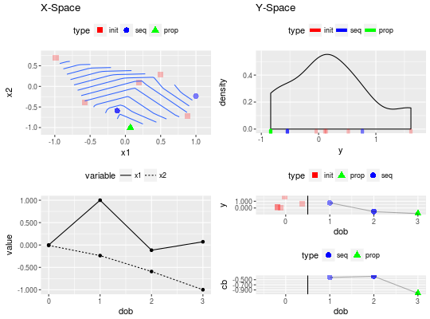

See mbo_parallel for all parallelization options.
mbo(fun, design = NULL, learner = NULL, control, show.info = getOption("mlrMBO.show.info", TRUE), more.args = list())
smoof_function]
Fitness function to optimize.
For one dimensional target functions you can obtain a smoof_function by using makeSingleObjectiveFunction.
For multi dimensional functions use makeMultiObjectiveFunction.
It is possible to return even more information which will be stored
in the optimization path. To achieve this, simply append the attribute “extras”
to the return value of the target function. This has to be a named list of scalar values.
Each of these values will be stored additionally in the optimization path.data.frame]
Initial design as data frame.
If the y-values are not already present in design, mbo will evaluate the points.
If the parameters have corresponding trafo functions, the design must not be transformed before it is passed!
Functions to generate designs are available in ParamHelpers: generateDesign, generateGridDesign, generateRandomDesign.
Default is NULL, which means generateDesign is called and a design of size 4 times number of all parameters is created
The points are drawn via maximinLHS to maximize the minimal distance between design points.Learner]
Regression learner from mlr, which is used as a surrogate to model our fitness function.
If NULL (default), the default learner is determined as described here: mbo_default_learner.MBOControl]
Control object for mbo.logical(1)]
Verbose output on console?
Default is TRUE.[MBOSingleObjResult | MBOMultiObjResult]
# simple 2d objective function obj.fun = makeSingleObjectiveFunction( fn = function(x) x[1]^2 + sin(x[2]), par.set = makeNumericParamSet(id = "x", lower = -1, upper = 1, len = 2) ) # create base control object ctrl = makeMBOControl() # do three MBO iterations ctrl = setMBOControlTermination(ctrl, iters = 3L) # use 500 points in the focussearch (should be sufficient for 2d) ctrl = setMBOControlInfill(ctrl, opt.focussearch.points = 500) # create initial design des = generateDesign(n = 5L, getParamSet(obj.fun), fun = lhs::maximinLHS) # start mbo res = mbo(obj.fun, design = des, control = ctrl)#>#> #> #> #> #> #> #>print(res)#> Recommended parameters: #> x=0.0715,-1 #> Objective: y = -0.836 #> #> Optimization path #> 5 + 3 entries in total, displaying last 10 (or less): #> x1 x2 y dob eol error.message exec.time #> 1 0.49412784 0.27838269 0.51896329 0 NA <NA> 0.001 #> 2 0.19221587 0.09660861 0.13340534 0 NA <NA> 0.000 #> 3 -0.57942149 -0.38791501 -0.04252991 0 NA <NA> 0.000 #> 4 0.87832955 -0.72457760 0.10864358 0 NA <NA> 0.000 #> 5 -0.98750787 0.69022501 1.61188250 0 NA <NA> 0.000 #> 6 0.99980615 -0.23732034 0.76451342 1 NA <NA> 0.000 #> 7 -0.11653973 -0.59226928 -0.54466372 2 NA <NA> 0.000 #> 8 0.07150345 -0.99997326 -0.83634379 3 NA <NA> 0.000 #> cb error.model train.time prop.type propose.time se #> 1 NA <NA> NA initdesign NA NA #> 2 NA <NA> NA initdesign NA NA #> 3 NA <NA> NA initdesign NA NA #> 4 NA <NA> NA initdesign NA NA #> 5 NA <NA> NA initdesign NA NA #> 6 -0.4123341 <NA> 0.056 infill_cb 0.053 0.3238450 #> 7 -0.3683559 <NA> 0.041 infill_cb 0.045 0.4615345 #> 8 -1.0342509 <NA> 0.045 infill_cb 0.045 0.2278121 #> mean lambda #> 1 NA NA #> 2 NA NA #> 3 NA NA #> 4 NA NA #> 5 NA NA #> 6 -0.08848917 1 #> 7 0.09317866 1 #> 8 -0.80643879 1plot(res)#>#> #>#> #> #>#>#>#>